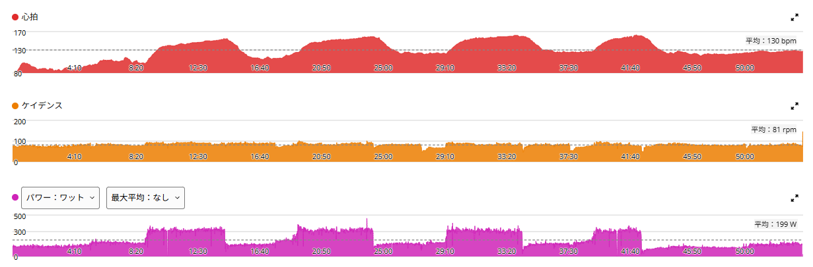

315W×5分×4本。3本と3分で潰れた。完遂するまでこれでいく
今日も天気が悪かったのでローラー。昨日はSST20分×3をやったが、今日は方向を変えて5分走にした。設定は315W × 5分 × 4本、レスト5分。
結論から書くと、完遂できなかった。しかも久しぶりに、えづくくらいきつかった。

53分19秒・NP243W・TSS69.0
- 全体53分19秒 / 平均199W / NP243W / IF0.885 / TSS69.0
- 心拍・回転平均130bpm / 最大163bpm / 平均81rpm
- パワーゾーンZ6が3分42秒 / Z5が12分52秒 / Z4は1分42秒 / Z3は39秒
- 心拍ゾーンZ4が12分51秒 / Z3が9分25秒 / Z5は0分00秒
時間は1時間にも届いていない。TSSも69.0で、昨日のSST（102.5）より軽い。それでも中身はまったく別物だった。
面白いのはゾーンの形である。パワーはゾーン5以上に16分35秒、ゾーン1に22分23秒。その間の中間ゾーン3〜4には2分21秒しか入っていない。踏むか、休むか。完全に二極化している。昨日のSSTが逆に中間ゾーンへ58分入っていたので、2日で真逆の形になった。
313W → 315W → 309W → 3分で終了
- 1本目5分01秒 / 313W
- 2本目5分01秒 / 315W
- 3本目5分00秒 / 309W
- 4本目3分01秒 / 302W（未完遂）
最初の2本はほぼ狙い通り。3本目は少し落ちて309W。そして4本目は3分で終了した。
315W×5分を2本までは揃えられる。3本目もほぼ5分走れる。でも4本目まで揃える力はまだない。今の立ち位置がかなり分かりやすく出た。

久しぶりにえづいた
最近もSST20分×3など、それなりにきつい練習はしている。ただ今回の5分走はまた違うきつさだった。1本目は普通にいける。2本目もまだいける。3本目は明らかに余裕がなくなり、4本目はとうとう維持できなかった。久しぶりにえづくところまで追い込まれた。
315Wという出力そのものは、短時間なら出せる。でもそれを5分維持して、5分休んでもう一度。これを繰り返すと一気に難しくなる。
ただし数字を見ると、心拍ゾーン5（167bpm超）には0秒しか入っていない。最大163bpmである。えづくほどきつかったのに、心拍としては上限に届いていない。これは以前から何度か出ている形で、パワーゾーン6以上を長く使っているのに心拍が付いてこない。5分では心拍が上がりきる前に終わっている、ということなのかもしれない。
実走のゴルビーでは、もっと出ている
ここは正直に書いておく。5分走そのものは、このブログでは新しいメニューではない。実走のゴルビーが、そもそも5分×5本である。
- 8月8日（実走）323W → 328W → 328W → 321W → 332W（5本完遂）
- 8月22日（実走）328W → 328W → 323W → 332W（4本）
- 今日（ローラー）313W → 315W → 309W → 302W（3分で終了）
実走では325W前後を5本揃えられているのに、ローラーでは315Wを4本揃えられない。10W以上低い設定で、しかも本数が足りていない。
これは以前から書いているローラーと実走の差そのものである。実走は身体や重心を使って自転車を動かせるが、ローラーは誤魔化しが利かない。逆に言えば、ローラー側にはまだ伸びしろがあるということでもある。実走でできていることが室内でできないなら、埋める余地は残っている。
60/30より、こっちの方が効いている気がする
最近は60秒ON／30秒OFFの60/30も練習に入れていた。もちろん60/30にも意味はあると思う。ただ、実際にやってみた感覚としては、今回のような5分走の方が自分には効いている感じがある。
当面の分かりやすい目標として「ローラーで1時間300W」を置いている。そう考えると、一瞬だけ大きなパワーを出すよりも、300Wを超えた状態で何分も耐える能力を伸ばしたい。今回の315W×5分は、その方向にかなり合っているように感じた。
体重は72kg前後。でもW/kgは75kg基準のまま
最近の体重は72kg前後で推移している。9月に入ってからの平均は72.05kg。少し上下はしているが、大きく増えることなくこの辺りで安定している。
ただし、ブログ内でW/kgを扱う場合はこれまで通り75kg基準で見ていく。過去記事と比較できなくなるからである。その基準なら315Wは4.2W/kg。これを5分×4本。まずはここをきっちり揃えられるようにしたい。
次の目標は「315Wで4本完遂」
今回できなかったからといって、次回310Wに下げて4本揃える方向にはしない。逆に、調子が良かったから320Wに上げることもしない。しばらくは315W × 5分 × 4本を固定メニューにする。
すでに313W、315W、309Wと3本目までかなり近いところまで来ている。4本目も3分までは走れた。なので狙うのはシンプルである。315Wで5分を4本すべて完遂する。
60/30を完全にやめるわけではないが、ローラーで高強度をやる日の主力は、しばらくこの5分走にしてみる。目標は単純。315W、5分、4本。完遂するまで、とりあえずこれでいく。
次に見るポイント
- 4本目3分01秒をどこまで伸ばせるか。同じところで潰れるのか
- 3本目309Wを315Wへ戻せるか。3本目が揃えば4本目の見込みも変わる
- 実走との差実走325W×5本とローラー315W×4本の10W差が縮まるか
- 心拍5分走で心拍ゾーン5に入る日が来るか。それとも毎回163bpm止まりか